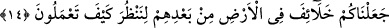
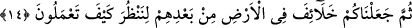

NASIL DAVRANACAĞINIZA
BAKALIM DİYE
13. Andolsun ki zulmettikleri için sizden önce birçok nesilleri helâk ettik. Halbuki
peygamberleri kendilerine açık deliller getirmişti. Onlar, îmân edecek değillerdi.
İşte biz, günahkâr topluluğu böyle cezâlandırırız.
14. Sonra, nasıl davranacağınıza bakalım diye onların ardından sizi yer yüzünde
halifeler kıldık.
“Andolsun ki zulmettikleri için” peygamberleri yalanlamak, güçlerini ve organlarını
gereksiz yerlerde kullanmak suretiyle zulmettikleri vakit “sizden önce birçok nesilleri”
yani Nuh ve Âd kavmi gibi geçmiş milletleri “helak ettik.” Yani ey Mekkeliler, sizin
zamanınızdan önce onları helak ettik.
“Halbuki peygamberleri kendilerine” doğruluklarına delâlet eden “açık deliller
getirmişti. Ama onlar, îmân edecek değillerdi.” Yani kabiliyetleri bozulduğu ve Allah
kendilerini yalnız ve yardımsız bıraktığı, küfür üzere öleceklerini bildiği için îmân
etmek kendilerine doğru gelmiyordu. Sanki şöyle buyrulmaktadır: Onlara tanınan
mühletin hiçbir faydası kalmayacak şekilde zulmedip küfürde ısrâr edince onları helâk
ettik.
“İşte biz, günahkâr topluluğu”; her günahkarı “böyle” bu cezâ gibi
“cezâlandırırız.” Bu da kendilerine mühlet tanımanın bir faydası olmayacağı
kesinleşecek şekilde peygamberlerini yalanlamaları ve küfürde ısrarları sebebiyle
helâk edilmeleridir.
14. Sonra, nasıl davranacağınıza bakalım diye onların ardından sizi yer yüzünde
halifeler kıldık.
“Sonra, nasıl davranacağınıza bakalım diye onların ardından sizi yeryüzüne
halifeler kıldık.” Denemek için bir kimsenin halîfe tayin etmesi gibi helâk ettiğimiz
nesillerden sonra yeryüzünde sizi onların yerine geçirdik. Allah Teâlâ, hakikatte insanın